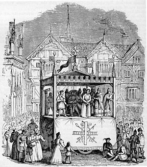

Европейский театр
Средневековье
После падения Римской империи античный театр был забыт: ранние идеологи христианства осуждали лицедейство, и не только актёры, музыканты и «плясуны», но и все «одержимые страстью к театру» исключались из христианских общин. Средневековый театр фактически рождался заново, из народных обрядов и религиозных праздников — инсценировок церковных служб.
К языческим крестьянским праздникам и связанным с ними традиционным играм восходит искусство средневековых гистрионов — бродячих актёров, которые могли быть одновременно и танцорами, и певцами, и рассказчиками, и дрессировщиками животных, гимнастами и фокусниками, играть на самых разнообразных инструментах. К искусству гистрионов восходит фарс, ставший неизменной составной частью городских мистериальных представлений.
Некоторые предполагают, что в противовес языческим, церкви западно европейских вырабатывали собственные обряды, которые придавали их учению действенную иллюстративность. Уже в IX веке в Западной Европе в день Рождества священники изображали евангельских пастухов, идущих в Назарет, происходил краткий диалог между ними и священником, служившим мессу, — диалогизация службы в своём развитии открывала возможности для драматического действия. В XI веке на Пасху и в Рождество уже разыгрывались настоящие представления.
Постепенно литургическая драма становилась более действенной, более содержательной, наполнялась психологическими переживаниями; тенденция к реалистической трактовке евангельских сюжетов и образов, отразившаяся и в оформлении представлений, и в бутафории, противоречила целям церковной службы, и в 1210 году литургическая драма была изгнана из церкви, — в дальнейшем представления давались на паперти, что позволило участвовать в них не только клирикам, но и горожанам.
Во второй половине XIII века получили широкое распространение представления, посвящённые житиям святых, — миракли, которые от собственно евангельских сюжетов отличались и более «бытовым» оформлением. В это же время появились и светские пьесы, в большей степени, чем миракли, связанные с народными фольклорными представлениями, — известны, в частности, «Игра о беседке» и «Игра о Робене и Марион» Адама де ла Аля.
Одновременно в городах, независимо от церкви, зарождался жанр мистерий — массового, площадного, самодеятельного искусства. Мистерии были частью городских торжеств, которые устраивались в ярмарочные дни, абстрактные церковные сюжеты обретали в них национальный колорит.
Драматический театр
Театр эпохи Ренессанса родился в Италии, где дольше, чем в других странах, существовала литургическая драма и относительно поздно, лишь в середине XV века, появился итальянский аналог мистерий — rapresentazioni sacre. Во Флоренции тексты для этих представлений писали крупные поэты-гуманисты — Фео Белькари, Луиджи Пульчи и сам Лоренцо Медичи. Увлечённые античной литературой и философией гуманисты поначалу прививали, насколько это было возможно, античный дух священным представлениям, вплоть до использования в мистериях языческих сюжетов, в частности мифа об Орфее.
Параллельно развивалась другая тенденция: в 70-х годах XV века Помпонио Лето в Риме возродил античный римский театр, — со своими учениками он ставил на языке оригинала сочинения Сенеки, Плавта и Теренция. Опыт Лета быстро распространился по всей Италии, и, поскольку латынь была понятна не всем, вскоре появились переводы древнеримскиx авторов на итальянский язык. Две формы итальянского театра — античные комедии в итальянских переводах (и оригинальные пьесы, долгое время носившие откровенно подражательный характер) и мистерии на мифологические сюжеты — постепенно сближались, заимствовали одна у другой элементы драматургической техники и сценического воплощения.
С распространением мистерий в Италии было связано появление первых театральных коллективов на рубеже XV—XVI веков, поначалу в виде любительских содружеств, которые со временем превращались в полупрофессиональные: ремесленники и представители интеллигенции собирали труппу, когда был спрос на представления, показывали их за плату в богатых домах и возвращались к своим прежним занятиям, когда спроса на представления не было[18]. Важную роль в становлении итальянского профессионального театра сыграла падуанская труппа актёра и драматурга Анджело Беолько, члены которой, выступая в разных пьесах под одними и теми же именами, в одних и тех же костюмах, создавали неизменные типы (tipi fissi)[19], — в этом отношении труппа Беолько предвосхищала комедию дель арте, появившуюся в середине XVI века, вскоре после его смерти[20]. Однако в точном переводе с итальянского commedia dell’arte в то время означала «профессиональный театр» — понятие «комедия масок» появилось позже.
На протяжении долгого времени спектакли играли во дворцах. Лишь в 20-х годах XVI века начали появляться специальные театральные здания, при этом принципы постройки заимствовались у Витрувия: как и в Древнем Риме, зрительный зал строился в виде амфитеатра.
Новый итальянский театр родился как придворный, однако очень скоро завоевал популярность в самых широких слоях итальянского общества, к интересам и вкусам которых он начал приспосабливаться на рубеже XV—XVI веков: мифологические сюжеты постепенно уступали место сюжетам из современной жизни, которые, в свою очередь, диктовали и новые принципы оформления спектаклей, и иной стиль актёрской игры.
Комедия дель арте, благодаря постоянным гастролям итальянских артистов, с конца XVI и на протяжении всего XVII века стала популярна в Испании, Франции, Англии и Германии.
Опера и балет
В эпоху Ренессанса в Италии зародились также опера и балет. Вначале в мистериях появилась эпизодически вводимая музыка, позднее музыка стала сопровождать всё действие. В середине XVI века были популярны пасторали, которые сопровождались хоровым пением. В конце XVI века появились произведения с одноголосым пением (монодия).
В 1637 году в Венеции был открыт первый оперный театр.
Первыми оперными композиторами были Якопо Пери, Клаудио Монтеверди и другие.
Первые балеты ставились при дворе для развлечения придворной знати. Хореография была создана на основе придворных танцев.
В XV веке одним из первых мастеров танца был Доменико да Пьяченца. Он занимался танцами вместе со своими учениками Антонио Корнацано и Гульельмо Эбрео, а также обучал этому искусству итальянскую знать. Да Пьяченца написал труд под названием «Про искусство танца и ведение танцев» (De arte saltandi et choreus ducendi).
В 1489 году Джан Галеаццо Сфорца женился на Изабелле Арагонской в Тортоне. В честь свадьбы было дано грандиозное представление, были организованы танцы по сюжету о Ясоне и аргонавтах. Зрелище получилось настолько впечатляющим, что подобные представления стали устраивать и в других местах.
В XVI веке в северной Италии появились грандиозные представления — spectaculi. Они включали не только танцы, но и конные представления и битвы. Екатерина Медичи принесла интерес к танцам во Францию. Она же была первым спонсором балетов, и устраивала грандиозные spectaculi. Одним из заметных был «Польский балет» (Le Ballet des Polonais), который был поставлен к визиту польских послов в 1573 году.
Первые балеты включали не только танцы, но и разговоры и элементы драмы. Постепенно танец вытеснил из балета элементы драмы. Во Франции балет сформировался как отдельный жанр. Балетные представления теперь давали не только при дворе, но и в театрах. Дворяне, включая Людовика XIV, исполняли в балете роли разной важности.
В 1585 году в Вероне открылся театр Олимпико с просцениумом.